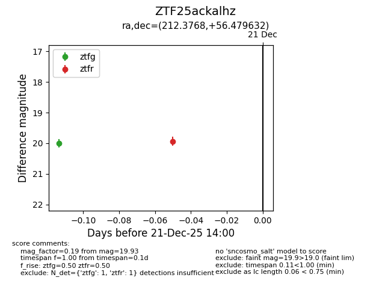
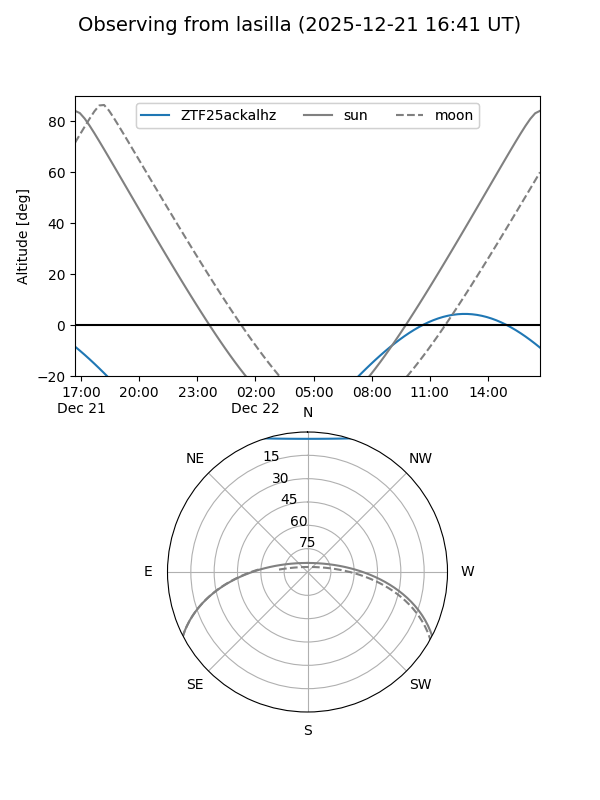

ZTF25ackalhz
Target ZTF25ackalhz at 2025-12-21 12:27
Aliases and brokers:
FINK: fink-portal.org/ZTF25ackalhz
Lasair: lasair-ztf.lsst.ac.uk/objects/ZTF25ackalhz
ALeRCE: alerce.online/object/ZTF25ackalhz
alt names
ZTF25ackalhz (ztf,fink_ztf)
Coordinates:
equatorial (ra, dec) = 212.3768,+56.47963
equatorial (HMS+DMS) = 14:09:30.43,+56:28:46.67
galactic (l, b) = (102.8492,+57.49983)
Flags:
Photometry:
last ztfg=20.00
1 ztfg detections
Lightcurve

Visibility


Additional plots